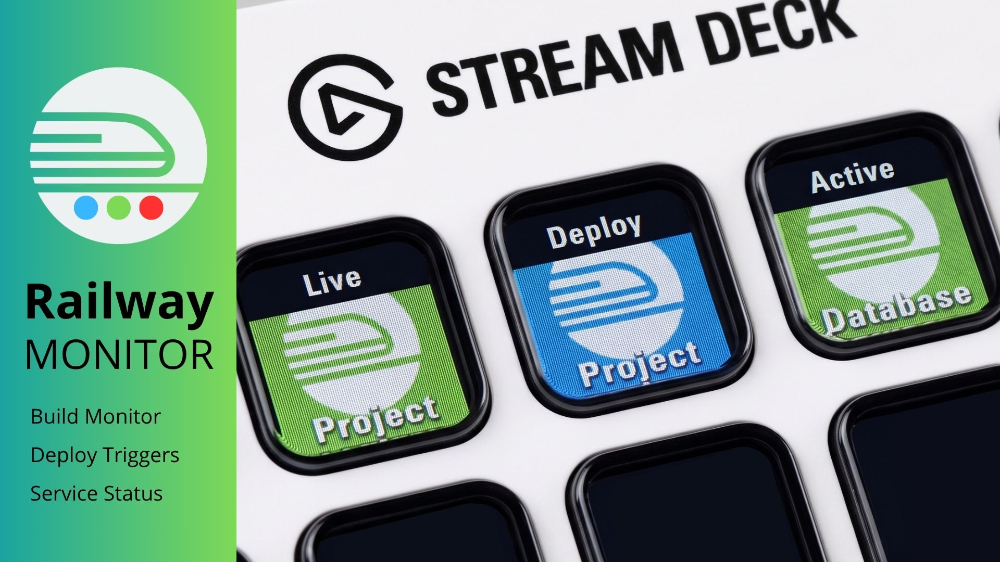

Take control of your Railway.app projects directly from your Stream Deck. Monitor builds, trigger deployments, and check service health — all with a single press.

Everything you need to manage your Railway.app services, right on your desk.
See your latest build status directly on your Stream Deck key — green for success, animated for in-progress, red for failure. Never miss a broken build again.
Instantly redeploy any Railway service with a single button press. No terminal, no browser tab, no friction — just your Stream Deck key.
Know at a glance whether your service is active, sleeping, or down. The key updates automatically so you're always in the loop.
Railway Monitor integrates directly with the Railway.app API so you always have the latest status without switching context.
Status updates reach your Stream Deck as fast as Railway reports them — no noticeable delay.
Your Railway API token is stored securely on-device using Stream Deck's encrypted credential storage.
Each action renders rich, color-coded icons directly on your Stream Deck key for instant recognition.
Just add your Railway API token and project ID. No complex configuration required.
Get Railway Monitor on the Elgato Stream Deck Marketplace and stay on top of your deployments without ever leaving your keyboard.